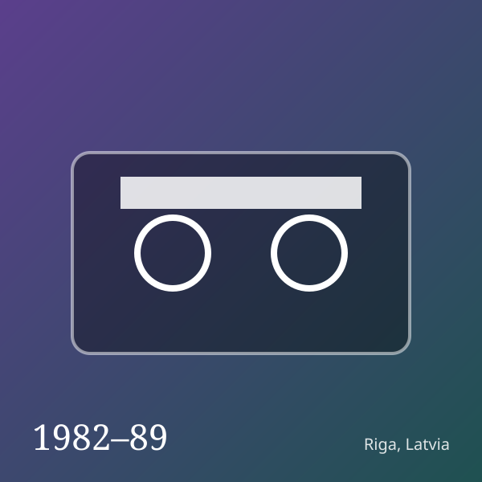

The Workshop for the Restoration of Unfelt Feelings

NSRD was a Riga collective of artists, Hardijs Lediņš and Juris Boiko at the core, who made a wonky, home-taped experimental pop that hardly anyone in the Latvian SSR wanted to hear. Albums like Invalīdu tramvajs ("Invalids' Tram", 1983) existed mostly on cassettes and reel-to-reel. Every year they walked the Bolderāja railway line as an art work.
A small archive label on the edge of Riga, Underbed Storage, now puts out their unreleased reels, along with tapes from the old DIY label T.U.M.S.A. Home Rec.